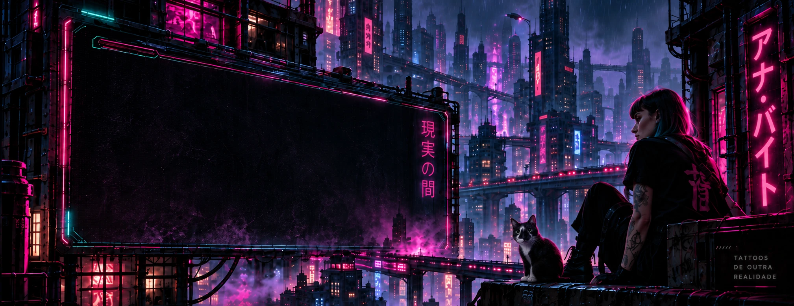
02TRABALHOS
ARQUIVO VIVO.
Tatuagens como portais.
Fragmentos de outros mundos na pele real.
{kind=link}
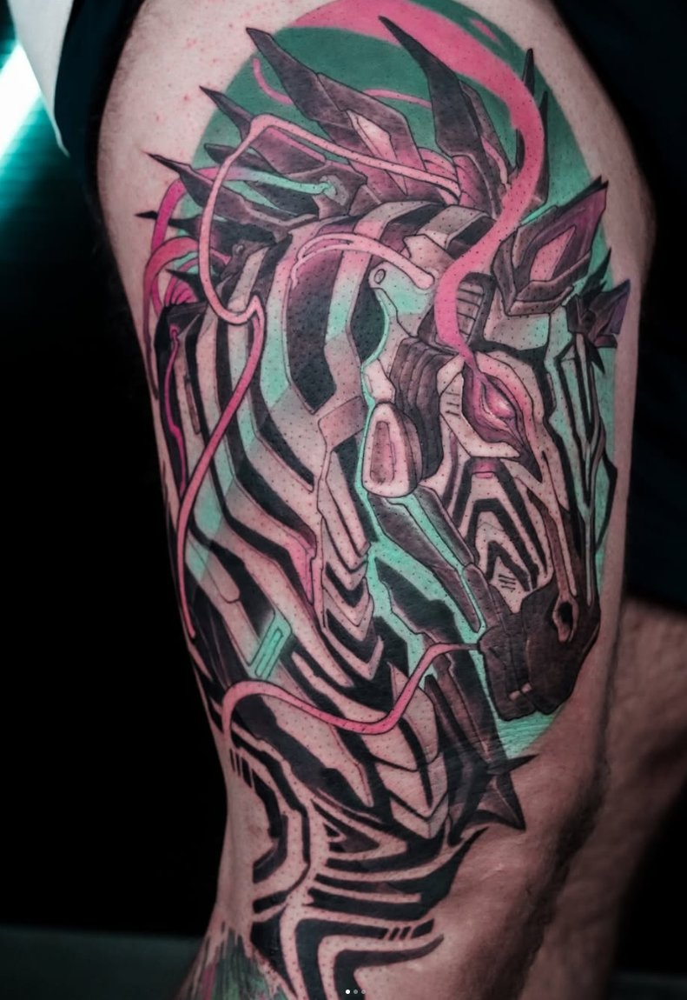
01Anatomia do futuro 02O voo da noite
02O voo da noite{kind=link}
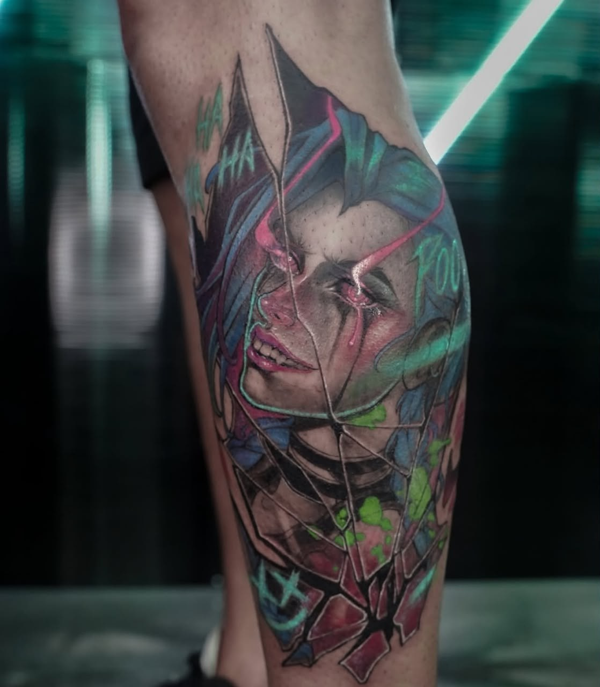
03Entre pele e circuito 04Instinto em neon
04Instinto em neon 05Dois mundos, um encontro
05Dois mundos, um encontro{kind=link}
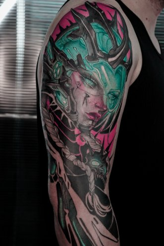
06Um rosto. Outro mundo.{kind=link}
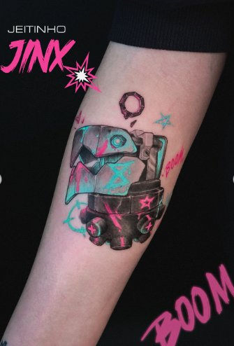
07Caos em neon{kind=link}
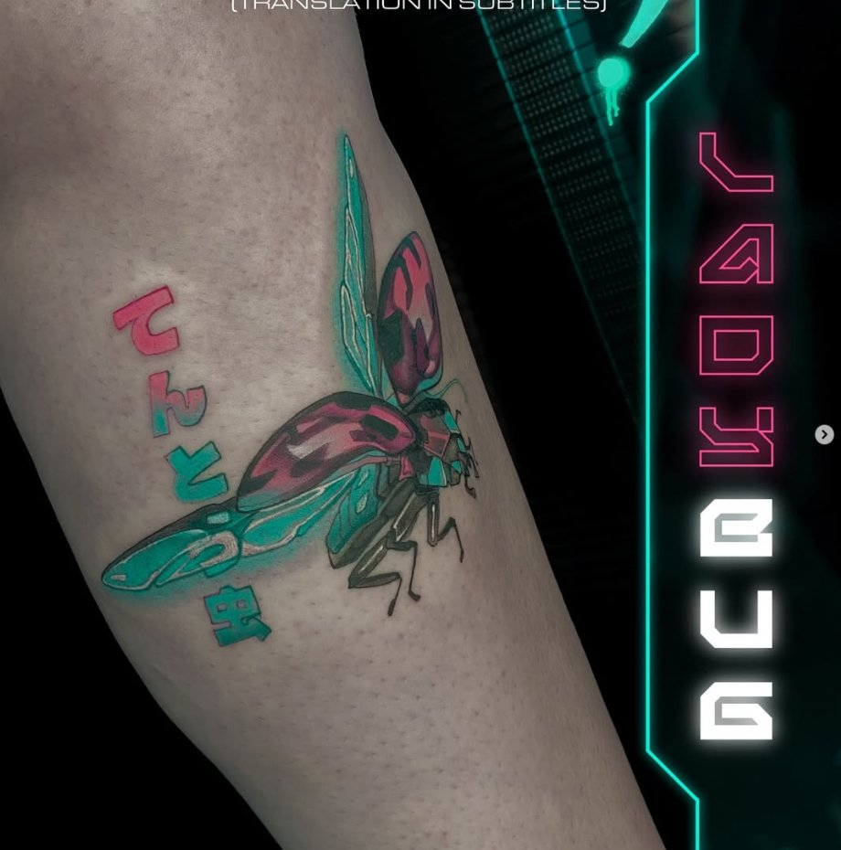
08Natureza reprogramada 09A noite tem olhos
09A noite tem olhos 10Corte de luz
10Corte de luz{kind=link}
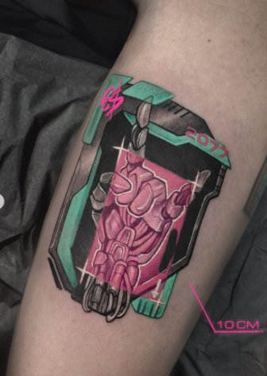
11Núcleo sensível 12Instinto sintético
12Instinto sintético{kind=link}
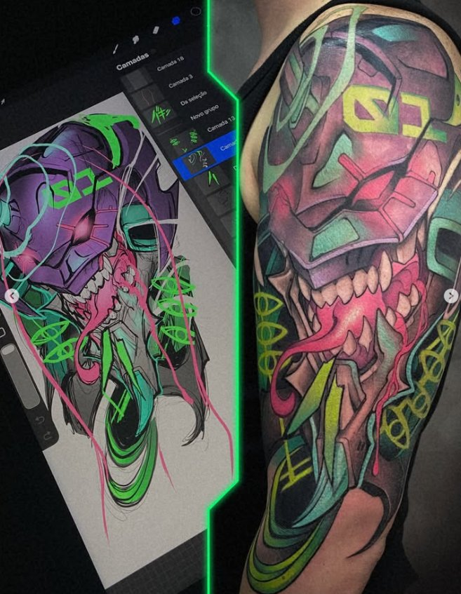
13Outra forma de existir 14Depois da meia-noite
14Depois da meia-noite 15Coração exposto
15Coração exposto{kind=link}
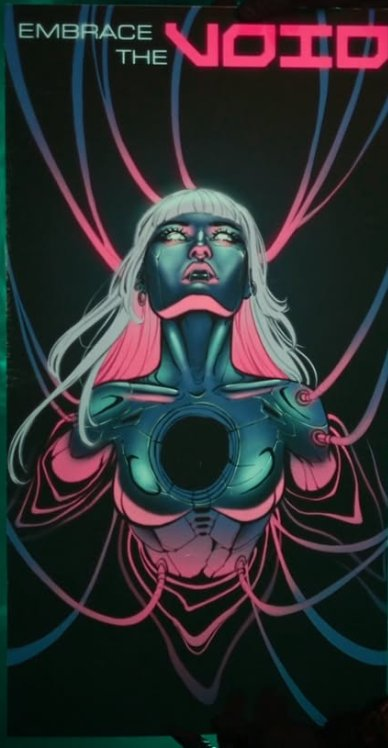
16Embrace the void 17Fill the void
17Fill the void{kind=link}
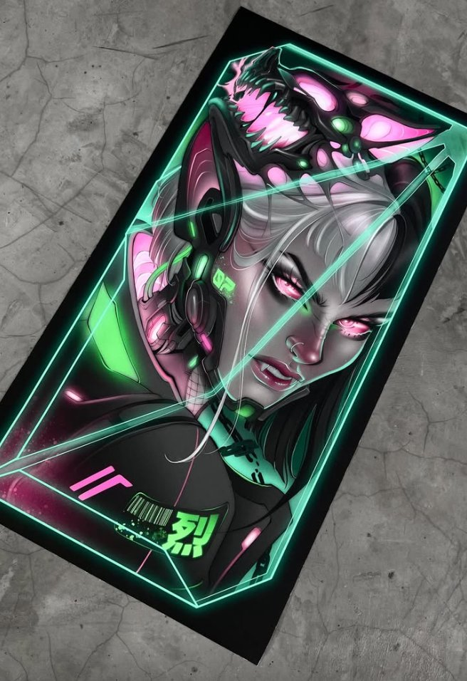
18Sinais de outro mundo 19Entre nós
19Entre nós19 trabalhos no acervo
03PROCESSO
DO CONCEITO
À PELE.
Ideia. Arte. Transformação.
Cada tatuagem começa em outro plano e ganha vida no mundo real. Sua história encontra forma, cor e movimento.
Comece pela ideia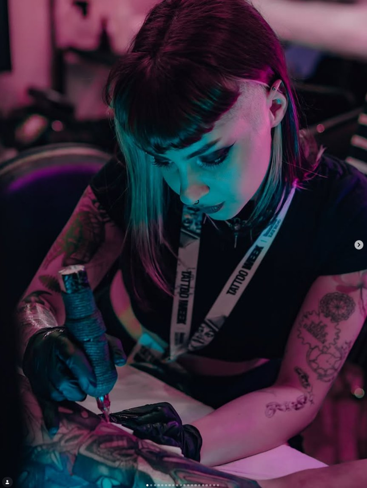
04SOBRE A ARTISTA
ARTE EM
TRÂNSITO.SOBRE A
ARTISTA.
Arte. Tecnologia. Pele real.
Ana Byte é tatuadora e artista visual. Seu trabalho habita o limiar entre o orgânico e o impossível, onde a técnica encontra o imaginário.
Conheça mais
04ALÉM DO TRAÇO
OUTROS MUNDOS.
UMA ARTE MUITO SUA.
Tatuagem, desenho e um desejo constante de experimentar.
Há cinco anos, Ana trabalha como tatuadora e artista. Sua base é a grande São Paulo, mas a arte também a leva a outras cidades do Brasil e do mundo.
Seu universo tem uma essência futurista e existencialista. Tecnologia, natureza e identidade se encontram em formas orgânicas, estruturas mecânicas e contrastes de cor.
Além de tatuar, cria artes digitais impressas e projetos por encomenda. Cada suporte é uma nova forma de explorar esse universo.
Mais sobre a artista05VAMOS CRIAR JUNTOS?
CONTE SUA IDEIA.
Vamos transformar em arte na sua pele.
Conte o que te inspira. Referências, personagens ou uma história sua. Você não precisa chegar com tudo resolvido: o resto, a gente constrói junto.